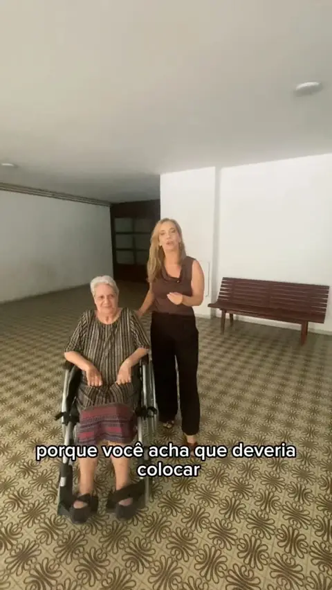
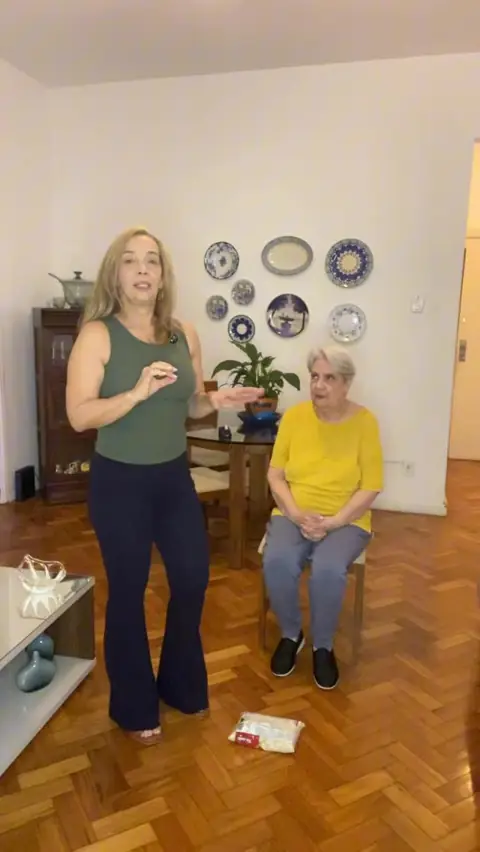

Conteúdos · Guias de mobilidade
Mover-se com segurança se aprende.
Orientações práticas da Andréa Rangel para quem usa andador, bengala ou cadeira de rodas, e para a família que cuida. Salve, pratique e compartilhe com quem precisa.
Guias essenciais
O que a Andréa mais ensina.
Seis temas, em ordem de leitura. Toque para abrir.
Guia 01Andador: altura, portas e giros seguros
Ao mesmo tempo que o andador previne quedas, ele pode causá-las. Mal regulado, faz o corpo se curvar ou eleva os ombros e dificulta a transferência de peso.
- Regule pela dobra do punho
Em pé, postura ereta e braços relaxados ao longo do corpo, coloque o andador ao lado. A manopla deve ficar na altura da dobra do punho.
- Confira o cotovelo
Ao segurar o andador, o cotovelo fica levemente dobrado, entre 15 e 30 graus.
- Olhe para frente
Andar olhando para baixo é um erro comum e aumenta o risco de queda. Postura alta, olhar no caminho.
- Gire em semigiros
Para mudar de direção, vire primeiro o andador e depois dê pequenos passos. Sem pressa.
- Meça as portas
Se o andador de rodas dianteiras não passa, coloque as duas rodas na parte interna da estrutura.
- Com assento, freio primeiro
No andador com assento e freios bilaterais, acione os dois freios antes de sentar.
- Escada, nunca
Na escada, use o corrimão e a ajuda de outra pessoa ou de uma bengala.
Escolha do modelo e treino de marcha devem ser feitos com um fisioterapeuta.
 VídeoComo regular o andador
VídeoComo regular o andador
Guia 02Bengala: apoio, não muleta para o corpo todo
A principal função da bengala é aumentar a base de apoio. Se você está colocando todo o peso do corpo nela, é provável que ela já não seja suficiente.
- Sempre em contato com o chão
Bengala suspensa não dá apoio. Ela acompanha cada passo, encostada no solo.
- A 15 cm do pé
Posicione a bengala cerca de 15 cm ao lado do pé. Deu um passo à frente, a bengala vai junto. Nunca a deixe para trás.
- Para subir, a perna saudável
Suba primeiro com a perna mais forte, que tem força para erguer o corpo. Depois traga a bengala e a perna mais fraca para o mesmo degrau.
- Para descer, a bengala
Desça primeiro a bengala e a perna mais fraca. A perna forte fica em cima, controlando a descida.
- Treine antes de andar
Leve a bengala à frente e, ao mesmo tempo, toque o chão com o calcanhar. Volte e repita. Isso cria consciência do movimento correto.
Para gravar: boa na subida, fraca na descida.
 VídeoBengala sempre no chão
VídeoBengala sempre no chão
Guia 03Cadeira de rodas é independência
A cadeira de rodas não é o problema. O problema é a história que a gente se conta sobre ela. Quem se recusa a usá-la para sair de casa acaba limitando cada vez mais a própria vida.
- Quem anda também pode usar
A cadeira funciona como um carro: leva de um ponto ao outro. Chegando ao destino, você levanta e anda normalmente.
- Andador em casa, cadeira na rua
Para distâncias maiores, dor nas articulações, cansaço ou medo de cair na rua, a cadeira é a aliada certa.
- Meça as portas
Compare a largura das portas de casa com a largura total da cadeira.
- Escolha o pneu pelo uso
Em casa, qualquer pneu serve. Para a rua, inflável ou antifuro.
- Pense no carro
Para transportar, prefira rodas e apoios de pé desmontáveis. E, sempre que possível, o assento mais confortável.

VídeoQuem anda também pode usarGuia 04Casa segura: quedas são evitáveis
A grande maioria das quedas pode ser evitada, e a maior parte acontece dentro de casa. Elas não são uma parte natural do envelhecimento.
- Não economize luz
Mantenha a casa bem iluminada assim que entardecer.
- Móvel não é apoio
Segurar em cadeira, mesa ou parede para andar é um sinal: falta um apoio adequado. Objetos podem deslizar ou virar.
- Mãos livres
Andar com as duas mãos ocupadas impede que você se proteja se perder o equilíbrio.
- Investigue a causa
Perda de força, alteração do equilíbrio, dor, medo de cair, visão turva, quedas anteriores e remédios que causam tontura. Um profissional saberá identificar.
Guia 05Para a família: cuidar sem tirar a autonomia
Na tentativa de proteger, muitas famílias passam a fazer tudo pelo idoso. E, aos poucos, ele se sente inútil e incapaz.
- Deixe fazer
Preparar o café, ir até o elevador, caminhar com o andador. Mesmo que demore mais, permita que participe, escolha e tente.
- Quebre o ciclo
Mais parado, menos força e equilíbrio. Menos força, mais insegurança. Mais insegurança, mais restrição. Movimento, dentro dos limites, é o caminho de volta.
- O seu braço não é andador
Se a pessoa faz muita força no braço do cuidador para andar, ela provavelmente precisa de um dispositivo. Com andador e supervisão, a caminhada fica mais leve para os dois.

Guia 06Movimento diário: não é tudo ou nada
Um estudo publicado no British Journal of Sports Medicine associou o aumento dos passos diários, chegando a 10.000, à redução do risco de morte, infarto e AVC. Mas com 4.000 passos por dia já há benefícios.
- Troque a pergunta
Em vez de “10.000 eu não consigo”, pense: quantos passos a mais eu consigo dar hoje?
- Fortaleça as pernas em casa
Com uma cadeira de apoio e um saco de mantimentos de 1 kg, dá para treinar a altura do passo e parar de arrastar os pés.
- Treine o equilíbrio
Transferir o peso de uma perna para a outra prepara o corpo para o instante em que o andador ou a bengala saem do chão.
Faça os exercícios dentro dos seus limites e, se possível, com acompanhamento profissional.

ExercícioPernas mais fortes, passo mais altoE-book
Guia prático do andador.
Quando adotar, a altura certa, os modelos que existem, como ensinar a andar e os erros que mais causam quedas. Para quem usa e para quem cuida.
Quero o meu guiaContinue aprendendo
Novas orientações toda semana.
Vídeos curtos no Instagram e aulas mais longas no YouTube.
Conteúdo educativo. As orientações não substituem a avaliação individual de um fisioterapeuta ou médico.